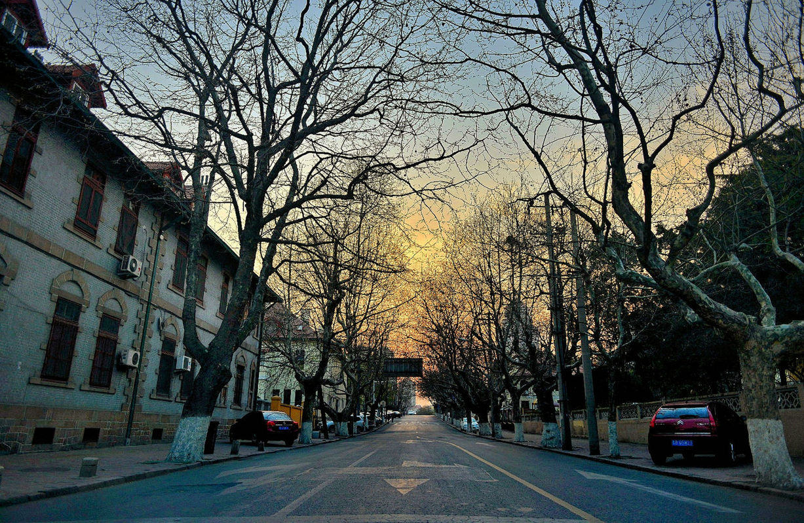

乐
标题：我的快乐时代V——一晌贪欢
作者: 不多颜
-

- 
 青岛
青岛
坐在花石楼的斜顶边缘，眼前终于没有人来人往，抬头淋着倾泻而下的温热日光，张开双臂，把手插到粗糙的、新鲜的、迎面而来的、浩浩的风里，听风吹过，听海浪卷上沙滩，直到夕阳西沉，才轻轻一叹。这傻愣在屋顶边缘的叹息就像是对于宁静近乎痛苦的渴求，而这渴求，陪我到过青海，到过大理，如今又陪我坐在花石楼7层高的斜顶上，一晌贪欢。
青岛看上去就像是查尔斯，都64岁了还在当王子。而这些就是我所经历的青岛：在凌晨4点醒来，坐在5点的圣弥厄尔教堂广场，靠着近6点的栈桥护栏看日出，爬上晌午的花石楼屋顶，绕一下午的八大关，转着圈在信号山顶看罢满城夕阳。另外，陪你过马路的很可能就是韩国姑娘，如果你只会一句“哦尼哈桑哟”也没关系，但是一定要学会“吃蛤蜊(ga la)哈(ha) 啤酒思密达”，你也会忍不住说：“嘿，你们笑起来真的和韩剧里一样。”
青岛看上去就像是查尔斯，都64岁了还在当王子。而这些就是我所经历的青岛：在凌晨4点醒来，坐在5点的圣弥厄尔教堂广场，靠着近6点的栈桥护栏看日出，爬上晌午的花石楼屋顶，绕一下午的八大关，转着圈在信号山顶看罢满城夕阳。另外，陪你过马路的很可能就是韩国姑娘，如果你只会一句“哦尼哈桑哟”也没关系，但是一定要学会“吃蛤蜊(ga la)哈(ha) 啤酒思密达”，你也会忍不住说：“嘿，你们笑起来真的和韩剧里一样。”